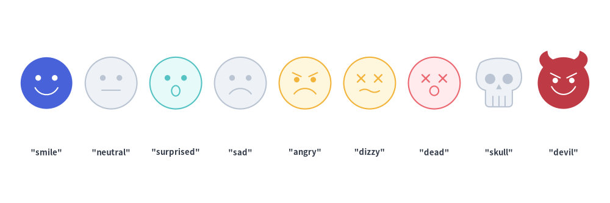
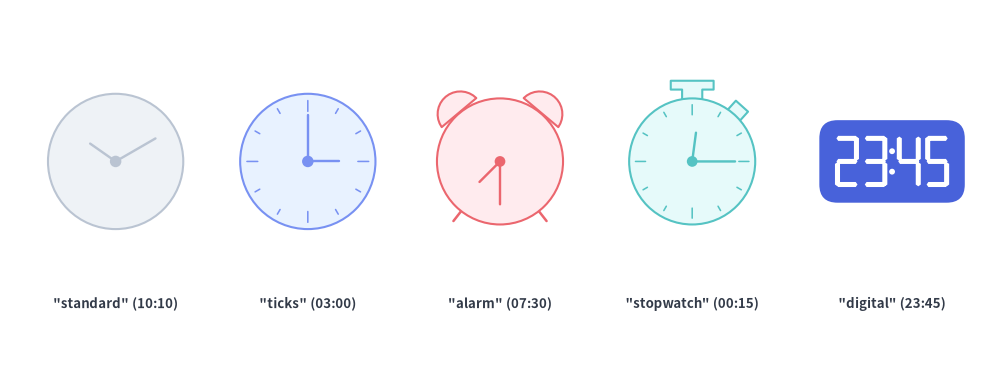
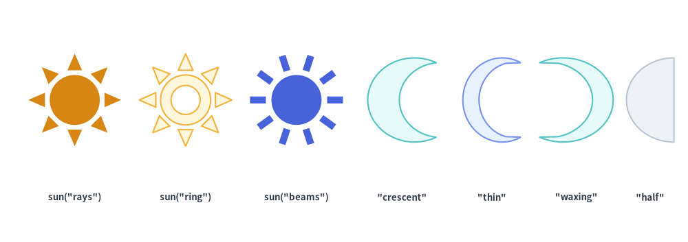
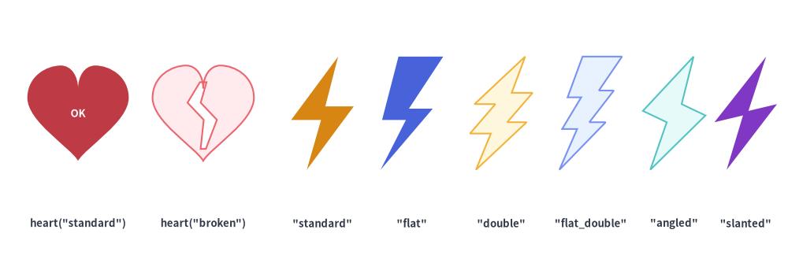
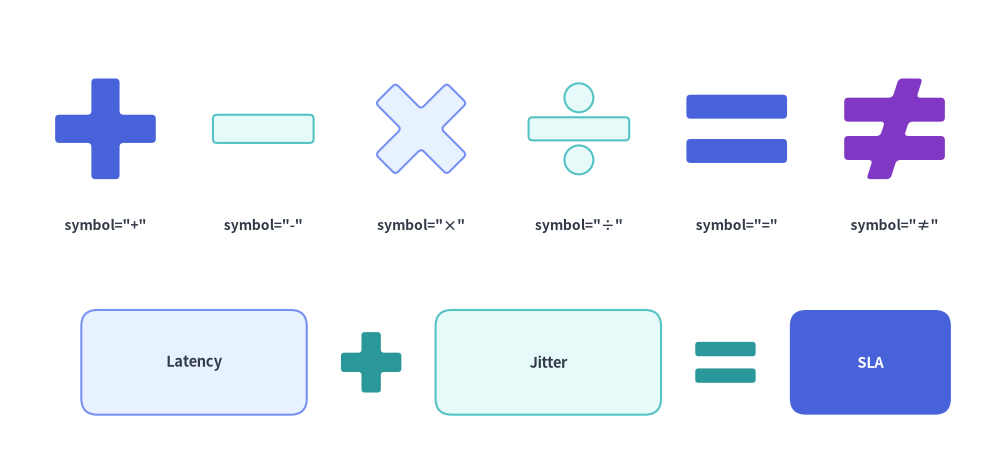

Faces, Clocks, Symbols & Operators
The Faces, Clocks, Symbols & Operators category of drawlib.shapes provides 8 expressive persona, time, celestial, mechanical, and mathematical primitives: 9-expression user/threat faces (face), analog and font-free 7-segment digital clocks (clock), sun and moon schedule/theme symbols (sun, moon), healthcheck hearts (heart), serverless/event lightning bolts (lightning), $N$-toothed mechanical cogwheels (gear), and 6 geometric mathematical operator symbols (math_symbol).

Source Code
from drawlib.canvas import save, setup
from drawlib.shapes import (
clock,
face,
gear,
heart,
lightning,
math_symbol,
moon,
sun,
)
from drawlib.styles import Styles
from drawlib.text import text
setup(width=128, height=58)
cap_st = Styles.DarkBold.patch(text_size=9.5)
# Row 1: face, clock (analog), clock (digital), sun, moon
face((16, 43), radius=8.2, variant="smile", style=Styles.PrimaryFlat)
text((16, 30), "face", style=cap_st)
clock((42, 43), radius=8.2, variant="ticks", hour=10, minute=10, style=Styles.Neutral)
text((42, 30), 'clock("ticks")', style=cap_st)
clock((70, 43), radius=8.2, variant="digital", hour=12, minute=34, style=Styles.PrimaryFlat)
text((70, 30), 'clock("digital")', style=cap_st)
sun((96, 43), radius=8.5, variant="rays", num_rays=8, style=Styles.WarningFlat)
text((96, 30), "sun", style=cap_st)
moon((116, 43), width=14, height=16, variant="crescent", style=Styles.SecondaryNeutral)
text((116, 30), "moon", style=cap_st)
# Row 2: heart, lightning, gear, math_symbol (+ and =)
heart(
(18, 16),
width=17,
height=15.5,
variant="standard",
style=Styles.DangerNeutral,
text="OK",
text_style=Styles.DarkBold.patch(text_size=9.5),
)
text((18, 3.5), "heart", style=cap_st)
lightning((45, 16), width=11.5, height=18, variant="standard", style=Styles.WarningFlat)
text((45, 3.5), "lightning", style=cap_st)
gear(
(74, 16),
num_teeth=8,
radius_ext=9.2,
radius_int=6.8,
hole_radius=3.0,
style=Styles.PrimaryNeutral,
)
text((74, 3.5), "gear", style=cap_st)
math_symbol((99, 16), symbol="+", width=12, style=Styles.PrimaryFlat.patch(shape_r=0.5))
math_symbol((115, 16), symbol="=", width=12, style=Styles.SecondaryNeutral.patch(shape_r=0.5))
text((107, 3.5), "math_symbol", style=cap_st)
save()
1. Quick Comparison of Faces, Clocks, Symbols & Operators
| Function | Required Geometry Args | Variants | Key Geometry Modifiers | Primary Diagram Use Cases |
|---|---|---|---|---|
face |
xy, radius |
"smile", "neutral", "surprised", "sad", "angry", "dizzy", "dead", "skull", "devil" |
style.angle |
User/actor personas, SLO health sentiment, crashed nodes ("dead"), threat actors ("devil", "skull"). |
clock |
xy, radius |
"standard", "ticks" ("dial"), "alarm", "stopwatch" ("timer"), "digital" |
hour=10.0, minute=10.0 |
Cron jobs, SLA timers, latency stopwatches, and font-free 7-segment HH:MM digital timestamps. |
sun |
xy, radius |
"rays" ("standard"), "ring", "beams" |
num_rays: int = 8 |
Daytime schedules, light theme icons, solar/clean energy nodes, brightness indicators. |
moon |
xy, width, height |
"crescent" ("standard"), "thin", "waxing", "half" |
mirror: bool = False |
Nightly batch/backup jobs, dark theme icons, sleep/idle states. |
heart |
xy, width, height |
"standard" ("classic"), "broken" |
style.angle |
Liveness/healthcheck probes ("standard"), degraded/unhealthy service states ("broken"). |
lightning |
xy, width, height |
"standard", "flat", "double", "flat_double", "angled", "slanted" |
mirror=False, style.shape_r |
Serverless functions, event/webhook triggers, cache hits, power/burst compute. |
gear |
xy, num_teeth, radius_ext, radius_int |
Solid core (hole_radius=None) or Ring (hole_radius > 0) |
tooth_ext_ratio, tooth_int_ratio, style.shape_r |
Background worker daemons, CI/CD automation engines, configuration/settings nodes. |
math_symbol |
xy, symbol, width |
"+", "-", "×", "÷", "=", "≠" (plus word aliases) |
height=None, thickness_ratio, style.shape_r |
Visual architecture formulas ([Service A] + [Cache] = [Low Latency]), comparison matrices. |
2. Expressive Actor, Status & Threat Faces (face)
For user personas, customer journey maps, system health indicators, and threat/attacker modeling, face renders a circular or silhouette face with nine built-in expressions (variant):
face(
xy: tuple[float, float],
radius: float,
*,
style: Style,
variant: Literal[
"smile", "neutral", "sad", "angry", "surprised",
"dizzy", "dead", "skull", "devil",
] = "smile",
text: str = "",
text_style: Style | None = None,
) -> None
Parameter Reference & variant Options
| Parameter | Type | Default | Description |
|---|---|---|---|
xy |
tuple[float, float] |
Required | Center coordinate (x, y) of the face. |
radius |
float |
Required | Outer radius of the face (> 0). |
variant |
FaceVariant |
"smile" |
Facial expression or persona variant (case-insensitive): • "smile": Upward cubic-Bézier smile curve.• "neutral": Straight horizontal mouth line.• "surprised": Elliptical open 'O' mouth.• "sad": Downward cubic-Bézier frown curve.• "angry": Downward frown curve plus inward-slanted eyebrows.• "dizzy": Crossed 'X' eyes + wavy mouth (overloaded / degraded node).• "dead": Crossed 'X' eyes + flat mouth with hanging tongue (crashed / OOM killed).• "skull": Cranium + jawbone silhouette with hollow eye sockets, nasal cavity, and teeth (fatal / poison pill).• "devil": Curved horns + slanted eyebrows + sinister grin (attacker / malicious actor). |
style |
Style |
Required | Face fill, outline, and rotation (angle). Features automatically use style.shape_line_color when a border is present, or high-contrast text_color/white on flat borderless styles (Styles.PrimaryFlat). |
text / text_style |
str / Style | None |
"" / None |
Optional text label and typography style. |
from drawlib.canvas import save, setup
from drawlib.shapes import face
from drawlib.styles import Styles
from drawlib.text import text
setup(width=132, height=44)
variants = [
("smile", Styles.PrimaryFlat),
("neutral", Styles.Neutral),
("surprised", Styles.SecondaryNeutral),
("sad", Styles.Neutral),
("angry", Styles.WarningNeutral),
("dizzy", Styles.WarningNeutral),
("dead", Styles.DangerNeutral),
("skull", Styles.Neutral),
("devil", Styles.DangerFlat),
]
for i, (v_name, st) in enumerate(variants):
cx = 10 + i * 14.0
face((cx, 26), radius=5.6, style=st, variant=v_name)
text((cx, 11), f'"{v_name}"', style=Styles.DarkBold.patch(text_size=9.5))
save()

3. Analog & Font-Free Digital Clocks (clock)
clock renders either an analog clock face with dynamically angled hour and minute hands ("standard", "ticks", "alarm", "stopwatch") or a font-free 7-segment digital clock ("digital"):
clock(
xy: tuple[float, float],
radius: float,
*,
variant: Literal[
"standard",
"ticks", "dial",
"alarm",
"stopwatch", "timer",
"digital",
] = "standard",
hour: float = 10.0,
minute: float = 10.0,
style: Style,
text: str = "",
text_style: Style | None = None,
) -> None
Parameter & variant Reference
| Parameter | Type | Default | Description |
|---|---|---|---|
xy |
tuple[float, float] |
Required | Center coordinate (x, y) of the clock dial or digital housing. |
radius |
float |
Required | Dial radius (> 0). For variant="digital", the rectangular housing has width 1.8 * radius and height 1.0 * radius. |
variant |
ClockVariant |
"standard" |
Clock style (see Clock variant Comparison below). |
hour |
float |
10.0 |
Hour value (0–23). On analog variants, the hour hand smoothly advances with minute ($\theta_{\text{hour}} = 90^\circ - ((h \bmod 12) + m / 60) \times 30^\circ$). On variant="digital", formatted as zero-padded HH (int(hour) % 24). |
minute |
float |
10.0 |
Minute value (0–59). On analog variants, $\theta_{\text{minute}} = 90^\circ - m \times 6^\circ$. On variant="digital", formatted as zero-padded MM (int(minute) % 60). |
style |
Style |
Required | Fill, border, and rotation (angle) style. Hands, ticks, and 7-segment digits automatically select high-contrast stroke/fill colors (White on dark/flat fills, Dark on light/neutral fills). |
text / text_style |
str / Style | None |
"" / None |
Optional text label centered at xy. |
variant |
Accepted Aliases | Visual Anatomy | Typical Use Cases |
|---|---|---|---|
"standard" (default) |
— | Clean circular dial + center pivot dot + hour & minute hands | Minimalist cron/schedule icons, TTL indicators. |
"ticks" |
"dial" |
Circular dial + 12 radial hour tick marks (major ticks at 12, 3, 6, 9) + hands | Scheduled batch jobs, uptime clocks, time-series windows. |
"alarm" |
— | Circular dial + 12 ticks + twin top hemisphere bells + two angled bottom legs | Alerting thresholds, PagerDuty/on-call wakeups, SLA deadlines. |
"stopwatch" |
"timer" |
Circular dial + 12 ticks + top crown stem + angled $45^\circ$ side pusher button | Latency benchmarks, request timeout budgets, profiling timers. |
"digital" |
— | Rounded rectangular housing (1.8r × 1.0r) + pure-vector 7-segment HH:MM digits + colon dots |
Exact timestamp markers (00:00, 12:34, 23:59) with zero font dependencies and no ghost background segments. |
from drawlib.canvas import save, setup
from drawlib.shapes import clock
from drawlib.styles import Styles
from drawlib.text import text
setup(width=130, height=48)
lbl = Styles.DarkBold.patch(text_size=9.5)
# 1. Standard minimal analog clock (10:10)
clock((15, 27), radius=8.8, variant="standard", hour=10, minute=10, style=Styles.Neutral)
text((15, 8.5), '"standard" (10:10)', style=lbl)
# 2. Ticks / dial analog clock (03:00)
clock((40, 27), radius=8.8, variant="ticks", hour=3, minute=0, style=Styles.PrimaryNeutral)
text((40, 8.5), '"ticks" (03:00)', style=lbl)
# 3. Alarm clock with twin bells & legs (07:30)
clock((65, 27), radius=8.2, variant="alarm", hour=7, minute=30, style=Styles.DangerNeutral)
text((65, 8.5), '"alarm" (07:30)', style=lbl)
# 4. Stopwatch / timer with top stem & side pusher (00:15)
clock((90, 27), radius=8.2, variant="stopwatch", hour=0, minute=15, style=Styles.SecondaryNeutral)
text((90, 8.5), '"stopwatch" (00:15)', style=lbl)
# 5. Font-free 7-segment digital clock (23:45)
clock((116, 27), radius=8.8, variant="digital", hour=23, minute=45, style=Styles.PrimaryFlat)
text((116, 8.5), '"digital" (23:45)', style=lbl)
save()

4. Celestial & Theme Symbols (sun, moon)
For light/dark theme toggles, daytime vs. nightly batch windows, and geographic time-of-day indicators, sun and moon provide multiple geometric variants:
sun(
xy: tuple[float, float],
radius: float,
*,
variant: Literal[
"rays", "standard",
"ring",
"beams",
] = "rays",
num_rays: int = 8,
style: Style,
text: str = "",
text_style: Style | None = None,
) -> None
moon(
xy: tuple[float, float],
width: float,
height: float,
*,
variant: Literal[
"crescent", "standard",
"thin",
"waxing",
"half",
] = "crescent",
mirror: bool = False,
style: Style,
text: str = "",
text_style: Style | None = None,
) -> None
| Function | Parameter | Type | Default | Description |
|---|---|---|---|---|
sun |
xy / radius |
tuple / float |
Required | Center coordinate (cx, cy) and outer tip radius (> 0). Inner sun disc radius is 0.54 * radius. |
variant |
SunVariant |
"rays" |
• "rays" ("standard"): Solid center disc surrounded by num_rays detached triangular rays.• "ring": Hollow center annular ring surrounded by num_rays triangular rays.• "beams": Solid center disc surrounded by num_rays rectangular beam bars. |
|
num_rays |
int |
8 |
Number of radial rays (>= 3, typically 8 or 12). |
|
moon |
xy / width / height |
tuple / float |
Required | Center coordinate (x, y) and exact outer bounding width and height (> 0). |
variant |
MoonVariant |
"crescent" |
• "crescent" ("standard"): Classic balanced crescent moon.• "thin": Slender, deeply scooped crescent.• "waxing": Wide, fuller crescent with ample room for embedded text.• "half": Straight-chord D-shaped half moon. |
|
mirror |
bool |
False |
By default (mirror=False), the outer convex curve faces left ($-X$) and tips point right ($+X$). Set mirror=True to flip horizontally. |
from drawlib.canvas import save, setup
from drawlib.shapes import moon, sun
from drawlib.styles import Styles
from drawlib.text import text
setup(width=130, height=46)
lbl = Styles.DarkBold.patch(text_size=9.5)
# Sun variants (rays, ring, beams)
sun((14, 27), radius=8.8, variant="rays", num_rays=8, style=Styles.WarningFlat)
text((14, 8.5), 'sun("rays")', style=lbl)
sun((35, 27), radius=8.8, variant="ring", num_rays=8, style=Styles.WarningNeutral)
text((35, 8.5), 'sun("ring")', style=lbl)
sun((56, 27), radius=8.8, variant="beams", num_rays=10, style=Styles.PrimaryFlat)
text((56, 8.5), 'sun("beams")', style=lbl)
# Moon variants (crescent, thin, waxing, half)
moon((76, 27), width=13, height=16, variant="crescent", style=Styles.SecondaryNeutral)
text((76, 8.5), '"crescent"', style=lbl)
moon((93, 27), width=11, height=16, variant="thin", style=Styles.PrimaryNeutral)
text((93, 8.5), '"thin"', style=lbl)
moon((109, 27), width=14, height=16, variant="waxing", mirror=True, style=Styles.SecondaryNeutral)
text((109, 8.5), '"waxing"', style=lbl)
moon((123, 27), width=9, height=16, variant="half", style=Styles.Neutral)
text((123, 8.5), '"half"', style=lbl)
save()

5. Health Hearts & Event Lightning Bolts (heart, lightning)
5.1. Liveness & Healthcheck Hearts (heart)
heart renders a smooth cubic-Bézier heart ("standard") or a split two-piece cracked heart ("broken") for service healthchecks, SLA status cards, and user engagement metrics:
heart(
xy: tuple[float, float],
width: float,
height: float,
*,
variant: Literal[
"standard", "classic",
"broken",
] = "standard",
style: Style,
text: str = "",
text_style: Style | None = None,
) -> None
5.2. Serverless & Event Lightning Bolts (lightning)
lightning renders a high-voltage bolt silhouette with six geometric styles, optional horizontal reversal (mirror=True), and optional vertex rounding (style.shape_r):
lightning(
xy: tuple[float, float],
width: float,
height: float,
*,
variant: Literal[
"standard",
"flat",
"double",
"flat_double",
"angled",
"slanted",
] = "standard",
mirror: bool = False,
style: Style,
text: str = "",
text_style: Style | None = None,
) -> None
lightning Variant |
Top Edge | Zig-Zag Stages | Typical Use Cases |
|---|---|---|---|
"standard" (default) |
Pointed apex | 1-step classic bolt | Serverless functions (Lambda/Cloud Functions), webhook/event triggers, fast cache hits. |
"flat" |
Flat horizontal top bar | 1-step classic bolt | Classic battery/charging icons and bold industrial hazard markers. |
"double" |
Pointed apex | 2-step multi-jag bolt | High-voltage surges, cascading event streams, spike alerts. |
"flat_double" |
Flat horizontal top bar | 2-step multi-jag bolt | Heavy power/burst compute indicators. |
"angled" / "slanted" |
Slanted diagonal top edge | Asymmetric dynamic bolt | Action callouts and tilted comic/presentation accents. |
from drawlib.canvas import save, setup
from drawlib.shapes import heart, lightning
from drawlib.styles import Styles
from drawlib.text import text
setup(width=132, height=46)
lbl = Styles.DarkBold.patch(text_size=9.5)
# 1. Heart variants ("standard" and "broken")
heart(
(13, 27),
width=17,
height=16,
variant="standard",
style=Styles.DangerFlat,
text="OK",
text_style=Styles.WhiteBold.patch(text_size=9.5),
)
text((13, 8.5), 'heart("standard")', style=lbl)
heart((34, 27), width=17, height=16, variant="broken", style=Styles.DangerNeutral)
text((34, 8.5), 'heart("broken")', style=lbl)
# 2. All 6 Lightning variants
bolt_specs = [
("standard", 54, Styles.WarningFlat),
("flat", 69, Styles.PrimaryFlat),
("double", 84, Styles.WarningNeutral),
("flat_double", 99, Styles.PrimaryNeutral),
("angled", 113, Styles.SecondaryNeutral),
("slanted", 125, Styles.AccentFlat),
]
for var, cx, st in bolt_specs:
lightning((cx, 27), width=10.5, height=19, variant=var, style=st)
text((cx, 8.5), f'"{var}"', style=lbl)
save()

6. Gears & Cogwheels (gear)
For automation engines, background workers, CI/CD runners, and system settings, gear renders an $N$-toothed mechanical cogwheel with circular root valleys, configurable tooth tip/base ratios, and an optional transparent center hole:
gear(
xy: tuple[float, float],
num_teeth: int,
radius_ext: float,
radius_int: float,
*,
tooth_ext_ratio: float | None = None,
tooth_int_ratio: float | None = None,
hole_radius: float | None = None,
style: Style,
text: str = "",
text_style: Style | None = None,
) -> None
Parameter Reference
| Parameter | Type | Default | Description |
|---|---|---|---|
xy |
tuple[float, float] |
Required | Center coordinate (x, y) of the gear. |
num_teeth |
int |
Required | Number of gear teeth (>= 3, typically 6 to 12). Defines the angular pitch $\Delta\theta = 360^\circ / \text{num_teeth}$. |
radius_ext |
float |
Required | Outer tooth tip radius (> radius_int). |
radius_int |
float |
Required | Inner root valley radius (0 < radius_int < radius_ext). |
tooth_ext_ratio |
float | None |
None |
Fraction of one pitch angle $\Delta\theta$ occupied by the outer tooth tip in (0.0, 1.0). Defaults to 0.35. Must satisfy tooth_ext_ratio <= tooth_int_ratio. |
tooth_int_ratio |
float | None |
None |
Fraction of one pitch angle $\Delta\theta$ occupied by the inner tooth base in (0.0, 1.0). Defaults to 0.55. Must satisfy tooth_int_ratio >= tooth_ext_ratio. |
hole_radius |
float | None |
None |
Radius of the transparent circular cutout in the center (0 < hole_radius < radius_int). When None (default), the gear has a solid core ideal for displaying text. |
style |
Style |
Required | Fill, border, rotation (angle), and tooth corner rounding (shape_r: scalar float or (4 * num_teeth)-tuple). |
text / text_style |
str / Style | None |
"" / None |
Centered text label and optional typography override. |
Tooth Geometry & Customization Rules
- Trapezoidal vs. Square Teeth: By default (
tooth_ext_ratio=0.35,tooth_int_ratio=0.55), each tooth tapers outward like a realistic involute gear. Setting both ratios equal (e.g.tooth_ext_ratio=0.45, tooth_int_ratio=0.45) produces straight-sided radial teeth. - Root Arcs & Corner Rounding (
style.shape_r): Whenstyle.shape_risNone, root valleys and outer tips follow true circular arcs of radiiradius_intandradius_ext. Whenstyle.shape_ris set (e.g.Styles.PrimaryNeutral.patch(shape_r=0.8)), all $4 \times \text{num_teeth}$ tooth corners are smoothly filleted. - Solid Core vs. Center Hole (
hole_radius): Omithole_radiuswhen placing a text label inside the gear; specifyhole_radius(e.g.0.4 * radius_int) for a classic ring-style cogwheel.
from drawlib.canvas import save, setup
from drawlib.shapes import gear
from drawlib.styles import Styles
from drawlib.text import text
setup(width=126, height=48)
# 1. Solid gear with embedded text (hole_radius=None)
gear(
(18, 27),
num_teeth=8,
radius_ext=13.0,
radius_int=9.8,
style=Styles.PrimaryFlat,
text="Worker",
text_style=Styles.WhiteBold.patch(text_size=10.0),
)
text((18, 8), "hole_radius=None", style=Styles.DarkBold.patch(text_size=9.5))
# 2. Standard 8-tooth gear with center hole (tooth_ext_ratio=0.35, tooth_int_ratio=0.55)
gear(
(49, 27),
num_teeth=8,
radius_ext=13.0,
radius_int=9.5,
hole_radius=4.2,
style=Styles.PrimaryNeutral,
)
text((49, 8), "hole_radius=4.2", style=Styles.DarkBold.patch(text_size=9.5))
# 3. 12-tooth gear with wide square teeth (tooth_ext_ratio=0.48, tooth_int_ratio=0.48)
gear(
(80, 27),
num_teeth=12,
radius_ext=13.0,
radius_int=10.0,
tooth_ext_ratio=0.48,
tooth_int_ratio=0.48,
hole_radius=5.0,
style=Styles.SecondaryNeutral,
)
text((80, 8), "num_teeth=12 (square)", style=Styles.DarkBold.patch(text_size=9.5))
# 4. 6-tooth heavy gear with filleted tooth corners (shape_r=1.0)
gear(
(110, 27),
num_teeth=6,
radius_ext=13.0,
radius_int=8.8,
tooth_ext_ratio=0.38,
tooth_int_ratio=0.60,
hole_radius=3.8,
style=Styles.Neutral.patch(shape_r=1.0),
)
text((110, 8), "num_teeth=6, shape_r=1.0", style=Styles.DarkBold.patch(text_size=9.5))
save()

7. Mathematical Operator Symbols (math_symbol)
For visual equations and concept formulas ([Card A] + [Card B] = [Outcome]), math_symbol renders mathematical operators as filled, bordered geometric shapes rather than thin font glyphs:
math_symbol(
xy: tuple[float, float],
symbol: Literal[
"+", "plus",
"-", "−", "minus",
"*", "x", "×", "multiply",
"/", "÷", "divide",
"=", "equal",
"!=", "≠", "not_equal",
],
width: float,
height: float | None = None,
*,
thickness_ratio: float | None = None,
style: Style,
text: str = "",
text_style: Style | None = None,
) -> None
Parameter Reference
| Parameter | Type | Default | Description |
|---|---|---|---|
xy |
tuple[float, float] |
Required | Center coordinate (x, y) of the symbol bounding box. |
symbol |
MathSymbol |
Required | Operator symbol or canonical name (see Supported symbol Variants below). |
width |
float |
Required | Outer horizontal width of the symbol (> 0). |
height |
float | None |
None |
Outer vertical height (> 0). When None, defaults to width (square bounding box). |
thickness_ratio |
float | None |
None |
Bar thickness fraction in (0.0, 1.0) relative to min(width, height). Defaults to 0.28. |
style |
Style |
Required | Fill, border, rotation (angle), and bar corner rounding (shape_r: scalar float). |
text / text_style |
str / Style | None |
"" / None |
Centered text label and optional typography override. |
Supported symbol Variants & Aliases
Primary symbol |
Accepted Aliases | Geometric Construction |
|---|---|---|
"+" |
"plus" |
Unified 12-vertex orthogonal cross contour (no internal overlapping stroke lines). |
"-" |
"−", "minus" |
Single horizontal rectangular bar centered vertically. |
"×" |
"*", "x", "multiply" |
Unified 12-vertex diagonal cross rotated $45^\circ$ and scaled to fit (width, height). |
"÷" |
"/", "divide" |
Horizontal center bar combined with upper and lower circular dots (Path.make_compound_path). |
"=" |
"equal" |
Two parallel horizontal bars spaced symmetrically above and below center. |
"≠" |
"!=", "not_equal" |
Two parallel horizontal bars intersected by an angled slash in a single unified outer contour. |
from drawlib.canvas import save, setup
from drawlib.shapes import math_symbol, rectangle
from drawlib.styles import Styles
from drawlib.text import text
setup(width=124, height=58)
# Row 1: All 6 symbols (+, -, ×, ÷, =, ≠)
symbols = [
("+", 'symbol="+"', Styles.PrimaryFlat),
("-", 'symbol="-"', Styles.SecondaryNeutral),
("×", 'symbol="×"', Styles.PrimaryNeutral),
("÷", 'symbol="÷"', Styles.SecondaryNeutral),
("=", 'symbol="="', Styles.PrimaryFlat),
("≠", 'symbol="≠"', Styles.AccentFlat),
]
for idx, (sym, label, st) in enumerate(symbols):
cx = 13 + idx * 19.6
math_symbol((cx, 42), symbol=sym, width=12.5, style=st.patch(shape_r=0.5))
text((cx, 30), label, style=Styles.DarkBold.patch(text_size=10.0))
# Row 2: Visual equation layout (Card + Card = Result Card)
rectangle(
(24, 13),
width=28,
height=13,
style=Styles.PrimaryNeutral.patch(shape_r=2),
text="Latency",
text_style=Styles.DarkBold.patch(text_size=10.5),
)
math_symbol((46, 13), symbol="+", width=7.5, thickness_ratio=0.32, style=Styles.SecondaryFlat.patch(shape_r=0.4))
rectangle(
(68, 13),
width=28,
height=13,
style=Styles.SecondaryNeutral.patch(shape_r=2),
text="Jitter",
text_style=Styles.DarkBold.patch(text_size=10.5),
)
math_symbol((90, 13), symbol="=", width=7.5, thickness_ratio=0.28, style=Styles.SecondaryFlat.patch(shape_r=0.4))
rectangle(
(108, 13),
width=20,
height=13,
style=Styles.PrimaryFlat.patch(shape_r=2),
text="SLA",
text_style=Styles.WhiteBold.patch(text_size=10.5),
)
save()
